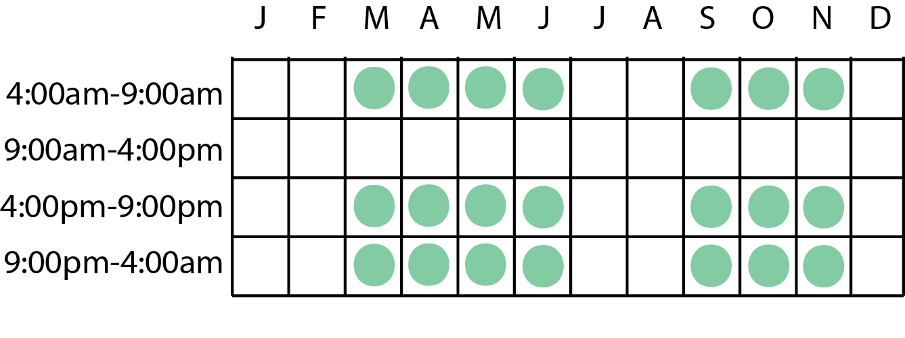
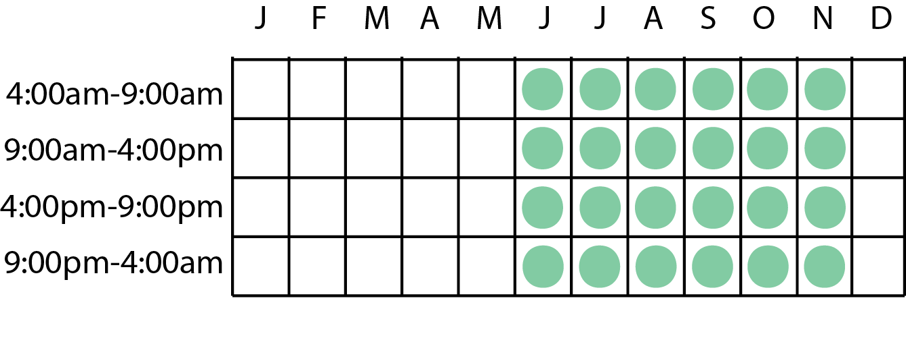

Abalone
Abalone has a medium shadow with normal bubbles.
Acorn Barnacle
Acorn barnacle can be found year-round at any time. It has a small shadow and few bubbles.
Chambered Nautilus
Chambered nautilus has a large shadow with normal bubbles.
Dungeness Crab
Dungeness crab has a large shadow with normal bubbles.

Firefly Squid
Firefly squid has a small shadow with few bubbles.
Flatworm
The flatworm has a small shadow and few bubbles.
Gazami Crab
Gazami crab has a large shadow with normal bubbles.
Giant Isopod
The giant isopod has a large shadow and normal bubbles.
Gigas Giant Clam
Gigas giant clam has a large shadow with many bubbles. This creature is very quick.
Horseshoe Crab
The horseshoe crab has a large shadow and normal bubbles.
Lobster
Lobster has a large shadow with many bubbles.
Mantis Shrimp
Mantis shrimp can be found year-round from 4pm-9pm. It has a medium shadow and few bubbles.
Moon Jellyfish
Moon jellyfish has a medium shadow with few bubbles.
Mussel
Mussel has a medium shadow with few bubbles.
Octopus
Octopus can be found year round. It has a large shadow and normal bubbles.
Oyster
Oyster has a medium shadow with few bubbles.
Pearl Oyster
Pearl oyster can be found year-round at any time and has a medium shadow with few bubbles.

Red King Crab
Red king crab has a large shadow and normal bubbles.
Scallop
Scallops can be found year-round at any time. They have a large shadow with normal bubbles. Hint: it's nice to share with others.
Sea Anemone
Sea anemone can be found year-round at any time and has a large shadow with many bubbles.

Sea Cucumber
Sea cucumber has a large shadow with normal bubbles.
Sea Grapes
Sea grapes have a medium shadow with few bubbles.
Sea Pig
Sea pig has a medium shadow with few bubbles.
Sea Pineapple
The sea pineapple has a medium shadow and few bubbles.
Sea Slug
Sea slug has a small shadow and few bubbles. This creature can be found year-round at any time.

Sea Star
Sea star can be found year-round at any time. It has a medium shadow with few bubbles.
Sea Urchin
Sea urchin has a large shadow with normal bubbles.
Seaweed
Seaweed has a large shadow with many bubbles.
Slate Pencil Urchin
Slate Pencil Urchin has a large shadow with many bubbles.
Snow Crab
Snow crab has a large shadow and normal bubbles.

Spider Crab
Spider crab has a large shadow and many bubbles.
Spiny Lobster
Spiny lobster has a large shadow and many bubbles.
Spotted Garden Eel
The spotted garden eel has a medium shadow and few bubbles.
Sweet Shrimp
Sweet shrimp has a medium shadow and few bubbles.
Tiger Prawn
Tiger prawn has a medium shadow and few bubbles.
Turban Shell
Turban shell has a medium shadow with few bubbles.

Umbrella Octopus
Umbrella octopus has a medium shadow few bubbles.
Vampire Squid
Vampire squid has a large shadow with normal bubbles.

Venus Flower Basket
The venus flower basket has a medium shadow and normal bubbles.

Whelk
Whelk can be found year round at any time. They have a medium shadow and few bubbles.

No results found. Please try another search.